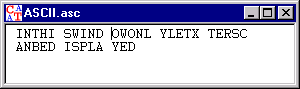

Window for letter string inputs and outputs
Menu icon:
This window is used to display documents which consist only of letters. Such a document can also be edited (see menu Edit). It is also possible to enter other characters than letters (numbers, other displayable special characters).

If a document contains only letters and displayable special characters, it is displayed in a window for textual inputs and outputs. Documents which contain non-displayable special characters are displayed in a window for hexadecimal inputs and outputs.